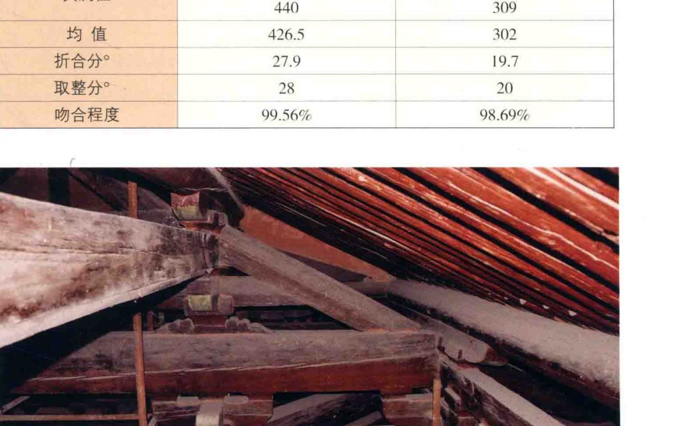
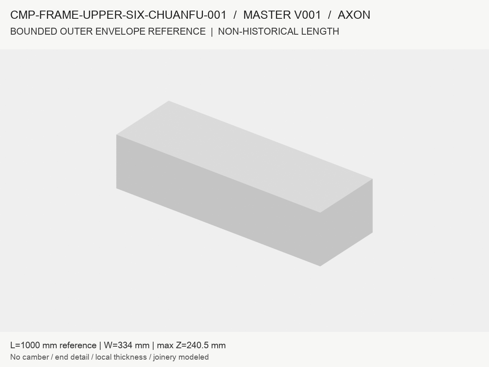
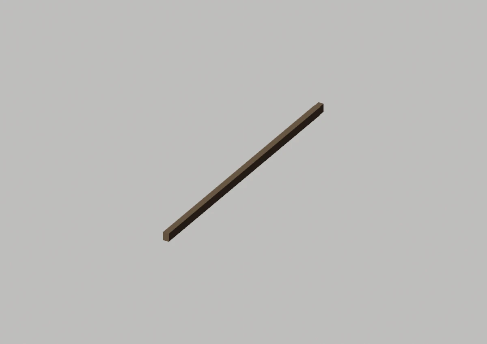

资料与现有 Master 基准
并排观察轮廓、截面和端部。视角不完全一致时，只作可见形态对照；不做像素尺寸测量或相似度百分比。
资料证据 / 来源见下

梁架照片A1 · PDF第82页 / 印刷第67页 · 原图局部裁切
全尺寸图 ↗这是同建筑的组合/环境图；仅按可见部分核对，不从遮挡推算完整单件外形。
打开来源 ↗ 现有工程成果

当前结论：仍为占位包络Master 为等截面参考体；全梁历史形态未成立。前端 C01 的批准仅覆盖局部端部设计，不能扩大到全梁及后端。
| 核对部位 | 资料支持到哪里 | 当前模型 / 缺口 |
|---|
| ① 轮廓 | 优先看原图可见边界；被遮挡部分不补成事实。 | 8顶点、6面直棱包络；真实外形未完整表达。 |
| ② 截面 / 尺寸 | 族统计、现状实测、报告理想模型分开理解。 | 登记的实例分配不自动证明逐件尺寸；模型参考长度不自动等于历史全长。 |
| ③ 端部 / 构造 | 照片或实测详图可见的连接单列；看不到的保持未知。 | 接触/干涉通过仅证明该工程几何的接口结果；不证明完整历史榫卯和承载力。 |
大图证据与其他观察方向
资料证据 / 来源见下

资料证据 / 来源见下

现有局部装配版本
以下与Master基准分开显示；用局部版本追溯已经修过的轮廓，保留各自批准范围。
现有工程成果

trial:EAST_UPPER6_FULL_BEAM_CANDIDATELOCAL_UPPER6_C01
全尺寸图 ↗前端局部设计已批准；全梁及后端未因此批准。
建筑位置与复用范围
资料证据 / 来源见下
建筑位置参照 · 东缝剖面A1 · PDF第292页 / 印刷第277页 · 完整原页
全尺寸图 ↗此图用于层位和组合关系；具体实例位置见右侧。未在图中强行标注尚未完成身份对应的构件。
打开来源 ↗ 实体构件族
东缝；西缝
Master 与变体
CMP-FRAME-UPPER-SIX-CHUANFU-001_MASTER
本页变体：当前登记口径，必要变化见原始资料
登记记录：2 条，仅表示对应记录范围，不能直接解释为实际物理件数。
展开实例登记位置及证据
上六椽栿-东缝
东缝
直接实测
上六椽栿-西缝
西缝
直接实测
模型引用与批准范围
本页范围依据：现行 Registry · 正式状态与批准范围
CMP-FRAME-UPPER-SIX-CHUANFU-001_MASTER_SEMANTIC_V001.json
局部装配与 Master 分开10月9日曲线令栱V002、10月12日工作V003及10月13日C02/上六椽栿前端C01有各自批准边界。局部批准不升级整个Master。后端七件R01仍被退回，10月14日类型/截面身份门槛未闭合。
C02及前端C01分支 · 10月14日复核原文 · 浏览现有装配网格